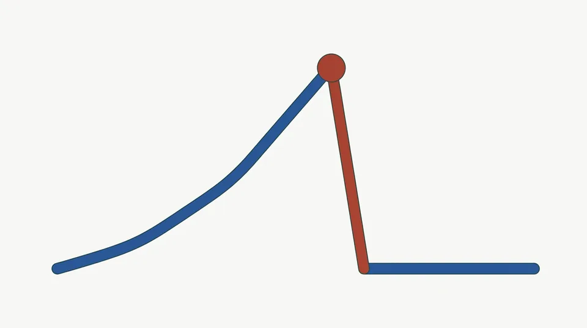

トップ ＞ 読みもの ＞ 配当を減らした会社はどれくらいあるか
配当を減らした会社はどれくらいあるか
公開 数字は 2026-09-04 時点

「買ったら放っておく」という持ち方でいちばん困るのは、 配当が減らされることです。では減配は珍しいことなのでしょうか。 実際に数えてみます。
69%の会社が、直近10期のどこかで減配している
本サイトが各社の直近10期の1株配当を見たところ、 配当の増減を判定できた3,085社のうち、 2,143社（69%）が そのあいだに一度は配当を減らしていました （2026-09-04 時点）。
直近10期のどこかで減配した（69）減配していない（31）
減配は例外ではありません。 「高配当だから放っておけばいい」とはいかない理由がここにあります。
業種によって差がある
30社以上ある業種で、減配を経験した会社の割合を並べたものです。
業績が景気に左右されやすい業種ほど、配当も動きやすくなります。同じ利回りでも、業種によって配当の安定度は違います。
減配した会社が悪い会社とは限りません
利益が大きく落ちた年に配当を減らすのは、 会社を守るための判断でもあります。 無理に配当を続けて蓄えを削るほうが、長い目で見れば危ういこともあります。
本サイトが利回りだけでなく、 利益剰余金で配当を何年払えるか、 手元の現金がどれだけあるかを見ているのは、 「減配せずに済む余力があるか」を確かめるためです。
あわせて見るとよいもの
本サイトは情報提供のみを目的としており、投資勧誘・投資助言ではありません。投資判断はご自身の責任でお願いします。